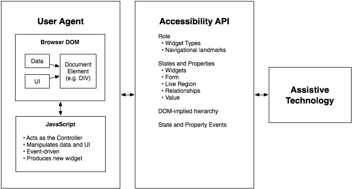

WAI-ARIA is a technical specification that provides a framework to improve the accessibility and interoperability of web content and applications. This document is primarily for developers creating custom widgets and other web application components. Please see the WAI-ARIA Overview for links to related documents for other audiences, such as the WAI-ARIA Primer that introduces developers to the accessibility problems that WAI-ARIA is intended to solve, the fundamental concepts, and the technical approach of WAI-ARIA.
The schema to support this standard has been designed to be extensible so that custom roles can be created by extending base roles. This allows user agents to support at least the base role, and user agents that support the custom role can provide enhanced access. Note that much of this could be formalized in [[XMLSCHEMA-2]]. However, being able to define similarities between roles, such as baseConcepts and more descriptive definitions, would not be available in XSD.
Rich Internet Application Accessibility
The domain of web accessibility defines how to make web content usable by persons with disabilities. Persons with certain types of disabilities use assistive technologies (AT) to interact with content. Assistive technologies can transform the presentation of content into a format more suitable to the user, and can allow the user to interact in different ways. For example, the user may need to, or choose to, interact with a slider widget via arrow keys, instead of dragging and dropping with a mouse. In order to accomplish this effectively, the software needs to understand the semantics of the content. Semantics is the science of meaning; in this case, used to assign roles, states, and properties that apply to user interface and content elements as a human would understand. For instance, if a paragraph is semantically identified as such, assistive technologies can interact with it as a unit separable from the rest of the content, knowing the exact boundaries of that paragraph. An adjustable range slider or collapsible list (a.k.a. a tree widget) are more complex examples, in which various parts of the widget have semantics that need to be properly identified for assistive technologies to support effective interaction.
New technologies often overlook semantics required for accessibility, and new authoring practices often misuse the intended semantics of those technologies. Elements that have one defined meaning in the language are used with a different meaning intended to be understood by the user.
For example, web application developers create collapsible tree widgets in HTML using CSS and JavaScript even though HTML has no semantic tree element. To a non-disabled user, it may look and act like a collapsible tree widget, but without appropriate semantics, the tree widget may not be perceivable to, or operable by, a person with a disability because assistive technologies may not recognize the role.
The incorporation of WAI-ARIA is a way for an author to provide proper semantics for custom widgets to make these widgets accessible, usable, and interoperable with assistive technologies. This specification identifies the types of widgets and structures that are commonly recognized by accessibility products, by providing an ontology of corresponding roles that can be attached to content. This allows elements with a given role to be understood as a particular widget or structural type regardless of any semantic inherited from the implementing host language. Roles are a common property of platform accessibility APIs which assistive technologies use to provide the user with effective presentation and interaction.
This role taxonomy includes interaction widgets and elements denoting document structure. The role taxonomy describes inheritance and details the attributes each role supports. Information about mapping of roles to accessibility APIs is provided by the WAI-ARIA User Agent Implementation Guide [[WAI-ARIA-IMPLEMENTATION]].
Roles are element types and will not change with time or user actions. Role information is used by assistive technologies, through interaction with the user agent, to provide normal processing of the specified element type.
States and properties are used to declare important attributes of an element that affect and describe interaction. They enable the user agent and operating system to properly handle the element even when the attributes are dynamically changed by client-side scripts. For example, alternative input and output technology, such as screen readers and speech dictation software, need to be able to recognize and effectively manipulated and communicate various interaction states (e.g., disabled, checked) to the user.
While it is possible for assistive technologies to access these properties directly through the Document Object Model [[DOM-Level-2-Core]], the preferred mechanism is for the user agent to map the states and properties to the accessibility API of the operating system. See the WAI-ARIA User Agent Implementation Guide [[WAI-ARIA-IMPLEMENTATION]] for details.
Figure 1.0 illustrates the relationship between user agents (e.g., browsers), accessibility APIs, and assistive technologies. It describes the "contract" provided by the user agent to assistive technologies, which includes typical accessibility information found in the accessibility API for many of our accessible platforms for GUIs (role, state, selection, event notification, relationship information, and descriptions). The DOM, usually HTML, acts as the data model and view in a typical model-view-controller relationship, and JavaScript acts as the controller by manipulating the style and content of the displayed data. The user agent conveys relevant information to the operating system's accessibility API, which can be used by any assistive technologies, such as screen readers.

Figure 1: The contract model with accessibility APIs
For more information see the WAI-ARIA Primer [[WAI-ARIA-PRIMER]] for the use of roles in making interactive content accessible.
In addition to the prose documentation, the role taxonomy is provided in Web Ontology Language (OWL) [[OWL-FEATURES]], which is expressed in Resource Description Framework (RDF) [[RDF-CONCEPTS]]. Tools can use these to validate the implementation of roles in a given content document. For example, instances of some roles are expected to be children of a specific parent role. Also, some roles may support a specific state or property that another role does not support.
The use of RDF/OWL as a formal representation of roles may be used to support future extensibility. Standard RDF/OWL mechanisms can be used to define new roles that inherit from the roles defined in this specification. The mechanism to define and use role extensions in an interoperable manner, however, is not defined by this specification. A future version of WAI-ARIA is expected to define how to extend roles.
Users of alternate input devices need keyboard accessible content. The new semantics, when combined with the recommended keyboard interactions provided in WAI-ARIA Authoring Practices [[WAI-ARIA-PRACTICES]], will allow alternate input solutions to facilitate command and control via an alternate input solution.
WAI-ARIA introduces navigational landmarks through its taxonomy and the XHTML role landmarks, which can help persons with dexterity and vision impairments by providing for improved keyboard navigation. WAI-ARIA may also be used to assist persons with cognitive learning disabilities. The additional semantics allow authors to restructure and substitute alternative content as needed.
Assistive technologies need the ability to support alternative inputs by getting and setting the current value of widget states and properties. Assistive technologies also need to determine what objects are selected and manage widgets that allow multiple selections, such as list boxes and grids.
Speech-based command and control systems can benefit from WAI-ARIA semantics like the role attribute to assist in conveying audio information to the user. For example, by determining that an element has a role of menuitem each containing text content representing a different flavor, a speech system might state to the user that, "Select one of three choices: chocolate, strawberry, or vanilla."
WAI-ARIA is intended to be used as a supplement for native language semantics, not a replacement. When the host language provides a feature that provides equivalent accessibility to the WAI-ARIA feature, use the host language feature. WAI-ARIA should only be used in cases where the host language lacks the needed role, state, and property indicators. Use a host language feature that is as similar as possible to the WAI-ARIA feature, then refine the meaning by adding WAI-ARIA. For instance, a multi-selectable grid could be implemented as a table, and then WAI-ARIA used to clarify that it is an interactive grid, not just a static data table. This allows for the best possible fallback for user agents that do not support WAI-ARIA and preserves the integrity of the host language semantics.
Co-Evolution of WAI-ARIA and Host Languages
WAI-ARIA is intended to augment semantics in supporting languages like [[HTML5]] and [[SVG2]], or to be used as an accessibility enhancement technology in other markup-based languages that do not explicitly include support for ARIA. It clarifies semantics to assistive technologies when authors create new types of objects, via style and script, that are not yet directly supported by the language of the page, because the invention of new types of objects is faster than standardized support for them appears in web languages.
It is not appropriate to create objects with style and script when the host language provides a semantic element for that type of objects. While WAI-ARIA can improve the accessibility of these objects, accessibility is best provided by allowing the user agent to handle the object natively. For example, it's better to use an h1 element in HTML than to use the heading role on a div element.
It is expected that, over time, host languages will evolve to provide semantics for objects that currently can only be declared with WAI-ARIA. This is natural and desirable, as one goal of WAI-ARIA is to help stimulate the emergence of more semantic and accessible markup. When native semantics for a given feature become available, it is appropriate for authors to use the native feature and stop using WAI-ARIA for that feature. Legacy content may continue to use WAI-ARIA, however, so the need for user agents to support WAI-ARIA remains.
While specific features of WAI-ARIA may lose importance over time, the general possibility of WAI-ARIA to add semantics to web pages is expected to be a persistent need. Host languages may not implement all the semantics WAI-ARIA provides, and various host languages may implement different subsets of the features. New types of objects are continually being developed, and one goal of WAI-ARIA is to provide a way to make such objects accessible, because web authoring practices often advance faster than host language standards. In this way, WAI-ARIA and host languages both evolve together but at different rates.
Some host languages exist to create semantics for features other than the user interface. For example, SVG expresses the semantics behind production of graphical objects, not of user interface components that those objects may represent; XForms provides semantics for form controls and does not provide wider user interface features. Host languages such as these might, by design, not provide native semantics that map to WAI-ARIA features. In these cases, WAI-ARIA could be adopted as a long-term approach to add semantic information to user interface components.
Assistive Technologies
Programmatic access to accessibility semantics is essential for assistive technologies. Most assistive technologies interact with user agents, like other applications, through a recognized accessibility API. Perceivable objects in the user interface are exposed to assistive technologies as accessible objects, defined by the accessibility API interfaces. To do this properly, accessibility information – role, states, properties as well as contextual information – needs to be accurately conveyed to the assistive technologies through the accessibility API. When a state change occurs, the user agent provides the appropriate event notification to the accessibility API. Contextual information, in many host languages like HTML, can be determined from the DOM itself as it provides a contextual tree hierarchy.
While some assistive technologies interact with these accessibility APIs, others may access the content directly from the DOM. These technologies can restructure, simplify, style, or reflow the content to help a different set of users. Common use cases for these types of adaptations may be the aging population, persons with cognitive impairments, or persons in environments that interfere with use of their tools. For example, the availability of regional navigational landmarks may allow for a mobile device adaptation that shows only portions of the content at any one time based on its semantics. This could reduce the amount of information the user needed to process at any one time. In other situations it may be appropriate to replace a custom user interface control with something that is easier to navigate with a keyboard, or touch screen device.
These requirements for semantic programmatic access parallel User Agent Accessibility Guidelines: Programmatic operation of user agent user interface and Programmatic notification of changes ([[UAAG10]]) except that it applies to content, not just to the user agent.

{kind=link}
{kind=link}